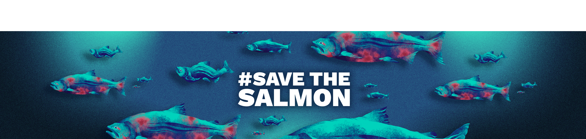

#SaveTheSalmon
A visual campaign raising awareness of fish welfare in New Zealand's salmon farming industry.
#SaveTheSalmon explores the welfare issues surrounding farmed salmon in New Zealand and the lack of public awareness surrounding the conditions these fish face.
Although fish are recognised as sentient animals, farmed salmon can experience overcrowding, stress, disease and poor welfare conditions.
The campaign aims to make these issues more visible and encourage the public to question the welfare standards surrounding farmed fish in New Zealand.
The campaign uses illustration and graphic design to create an emotional response while keeping the information direct and accessible.
Expressive illustrated salmon are combined with a bold visual identity and campaign messaging to draw attention to an issue that is often overlooked.
The final campaign was developed across a range of print and digital applications, creating a consistent visual system that can communicate the issue across different public touchpoints.
Research · Graphic Design · Illustration · Visual Identity · Motion Design · Digital Design